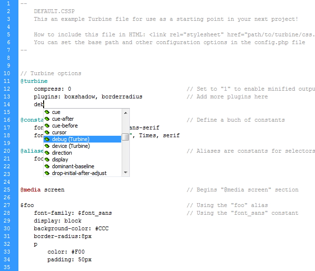
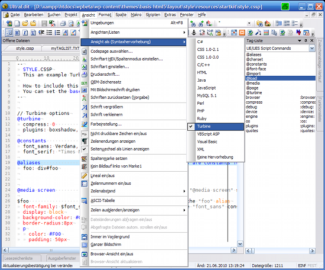
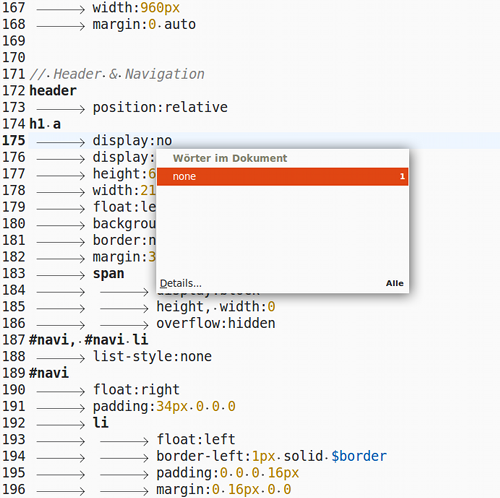
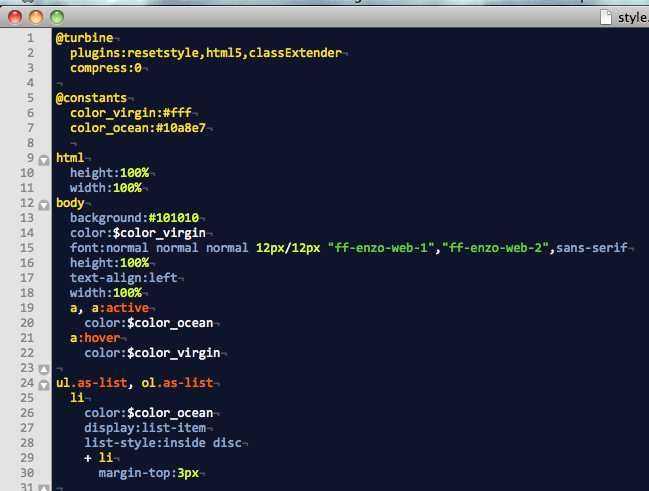
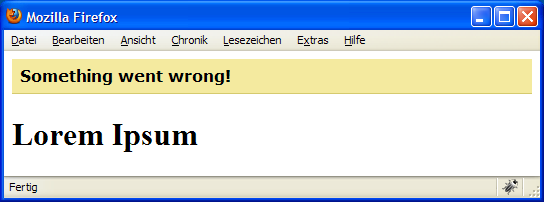

- ↓ Introduction
- ↓ Usage
- ↓ Core Plugins
- ↓ Development
- ↓ Tools
- ↓ FAQ
Introduction
This document describes Turbine 1.1, which is currently in beta state. This document may be slightly out of date. You can find the docs for the 1.0 branch in the current docs.
Turbine is a PHP-powered tool that introduces a new way for writing CSS. It's syntax and features are designed to decrease css development time and web developer headache. Turbine takes this …
// Welcome to Turbine!
@media screen
#foo, #bar
color:#FF0000
margin-left, margin-right: 4px
div.alpha, div.beta
font-weight:bold
border-radius:4px
… and turns it into …
@media screen {
#foo, #bar {
color: #FF0000;
margin-left: 4px;
margin-right: 4px;
}
#foo div.alpha, #foo div.beta, #bar div.alpha, #bar div.beta {
font-weight: bold;
-moz-border-radius: 4px;
-webkit-border-radius: 4px;
-khtml-border-radius: 4px;
border-radius: 4px;
}
}
…or, if you like fast-loading websites, directly into this (which is automatically cached on the server, gezipped and served with the correct expires headers):
@media screen{#foo,#bar{color:#F00;margin-left:4px;margin-right:4px}#foo div.alpha,#foo div.beta,#bar div.alpha,#bar div.beta{font-weight:bold;-moz-border-radius:4px;-webkit-border-radius:4px;-khtml-border-radius:4px;border-radius:4px}}
Turbine can save you a lot of typing and time and allow you to focus on a website's design and functionality instead of css's limitations, page performance or your least favourite browser's latest bugs. Think jQuery for CSS. Being fully extensible, you can customize Turbine to your liking.
Goals and Features
Turbine's basic features include:
- Minmal syntax – the less you have to type, the more you get done
- Packing, gzipping and automatic minification of multiple css files
- Constants (also known as "css variables") and selector aliases
- Oop-like inheritance, extension and templating features
- Nested css selectors
- Built-in device-, browser- and os sniffing
- Fully exensible through a very simple plugin system
While Turbine's basic features may save you some keystrokes, it's plugins automate and simplify some of the more tedious and complicated aspects of writing css. See the plugins section for details.
Usage
Installation and setup
Installation
Simply download the latest public release from Github and unpack it to a directory on your web server. There are no requirements beside PHP 5.2.
Global configuration
Turbine has two sets of configuration options - one on a per-file-basis and one on a global level. These global configuration options
are set in the file config.php. The following settings are availiable:
| Option | Effect | Default |
|---|---|---|
debug_level |
Disable all error messages (0), enable web developer debugging messages (1) or enable all error messages
(2). Setting this to anything but 0 also disables Turbine's server-side cache. |
1 |
css_base_dir |
Sets the base directory for the css and cssp files | |
minify_css |
Leave css files unchanged by Turbine (false) or minify them (true) |
true |
expire_in_future |
Set expire header in seconds | 0 |
Security notice: As of version 1.0.5 Turbine can only access files in the css_base_dir to prevent directory traversal.
Multiple websites
If you want to use the same Turbine installation on multiple websites you can modify the configuration for each site by simply hacking
config.php to suit your needs. See the file for details and an example.
Adding Turbine files to HTML documents
Turbine files are simple text files with the extension .cssp. They are processed by the
Turbine compiler and the result is then output as CSS code. Thus, a <link> element must be added to your HTML.
Add the <link> element manually
One way to use Turbine is to embed css.php in your HTML like a normal css file and add the files argument containing
a list of Turbine files separated by semicolons.
<link rel="stylesheet" href="path/to/turbine/css.php?files=file1.cssp;file2.cssp" />
Auto-generate the <link> element
As of 1.1.0 Turbine can generate it's own embedding code. Simply include /inc/turbine.php and add the turbine()
function in your document's <head>. The function takes up to four arguments:
- The path to css.php relative to the document. Defaults to 'css.php'.
- An array of .cssp files relative to the base dir. Defaults to an empty array.
- A string that is either
xhtmlorhtml, depending on whether you want XHTML or HTML output. Defaults toxhtml. - A value for the
<link>element'smediaattribute. Defaults to an empty string (which results in nomediaattribute being printed at all).
Example:
<?php
include('inc/turbine.php');
turbine('css.php', array(
'style/layout.cssp',
'style/design.cssp'
), 'xhtml', 'projection');
?>
Result:
<link rel="stylesheet" href="css.php?files=style/layout.cssp;style/design.cssp" media="projection" />
If you want the HTML returned rather than printed out directly, use the get_turbine() function with the same arguments as for
turbine().
Things to keep in mind
The base path for the files can be changed in the file config.php (css_base_dir).
You can also include regular css files, which will be output unchanged (or minified, if the minify_css
configuration option is set to true).
The files are processed in sequence and don't influence each other in any way. For example,
constants defined in fileA won't apply to code in fileB. If
you want share code between files, use the loader plugin.
Setting up your editor
There's basic Turbine support for Dreamweaver, UltraEdit and GtkSourceView.
Dreamweaver
You can find an extension for Dreamweaver in resources/editors/dreamweaver. This extension adds
.cssp-files to Dreamweaver's list of supported filetypes, puts in place some code highlighting and autocompletion (code hinting)
for Turbine files. To install the extension, just double click turbine.mxp, or open the Extension Manager and select
File → Install Extension…, browse for turbine.mxp and select it.

UltraEdit
Follow this guide on how to add
the Turbine wordfile resources/editors/ultraedit/turbine.uew to UltraEdit. Use the tags listed in
resources/editors/ultraedit/turbine.txt to complete your tag list.

GtkSourceView
The language file for GtkSourceView adds syntax highlighting to editors like Gedit and Anjuta. Simply copy the
file turbine.lang from resources/editors/gtksourceview-2.0/language-specs to either
~/.local/share/editors/gtksourceview-2.0/language-specs or
/usr/local/share/editors/gtksourceview-2.0/language-specs.

TextMate
The Turbine.tmbundle adds syntax highlighting with a small property and plugin documentation for TextMate. Simply copy the
file Turbine.tmbundle from resources/editors/textmate to
~/Library/Application Support/TextMate/Bundles. Now select Bundles → Bundle Editor → Reload Bundles from within TextMate.

Basic syntax
The one important thing about Turbine's syntax is that it is all about lines. The context of any statements in the code depends of the context of the statement's line.
Selectors and rules
Turbine's syntax works a bit like Python – the level of indentation instead of curly braces decides the context of a given line. A simple rule looks like this:
#foo div > p // Selector
color:red // Property and value
font-weight:bold // Property and value
The way Turbine determines if a given line is a selector or a property-value-pair is the indentation level of the following line:
#foo div > p // Next line is indented = this is a selector
color:red
font-weight:bold
span // Next line is indented = this is a selector
color:blue
This behavior allows nested selectors, which can be quite powerful (see nested selectors). You can use tabs or any number of spaces for indentation, but be careful to keep your indentation constistent in the whole file. Turbine will report indentation errors and try to fix files where tabs and spaces are mixed, but it's better not to depend on this.
Semicolons at the end of values are not required, but you can use them to put multiple declarations in one line:
#foo div > p
color:red; font-weight:bold
span
color:blue; font-style:italic
Comments
There a two kinds of comments available: single line comments that start with // …
// Hello world
… and block comments that start with a line containing nothing but -- and end with the same:
-- Hello world This is a block comment --
@media rules
@media-rules in Turbine a simple switches. Each @media line ends the previous @media block
and opens a new one.
@media screen // Open screen block
#foo
background:red
@media print // Close screen block, open print block
#foo
background:green
@media projection // Close print block, open projection block
#foo
background:blue
@media screen // Close projection block, open screen block
#bar
font-weight:bold
@media block of the same type will be merged, so the resulting css looks like the following:
@media screen {
#foo {
background: red;
}
#bar {
font-weight: bold;
}
}
@media print {
#foo {
background: green;
}
}
@media projection {
#foo {
background: blue;
}
}
If you need to end an @media block without opening a new one, you can do so using @media none.
@media screen
#foo
color:red
@media none
#bar
color:green
Result:
#bar {
color: green;
}
@media screen {
#foo {
color: red;
}
}
Prefixes
There are a few reserved prefixes for properties, values and selectors:
| Prefix | Context | Effect |
|---|---|---|
| $ | Selector | Selector alias, will be replaced by the selector defined in @aliases (see Constants and aliases) |
| Value | Constant, will be replaced by the value defined in @constants (see Constants and aliases) |
|
| $_ | Value | Special constant ($_SCRIPTPATH, $_FILEPATH, see Constants and aliases) |
| ? | Selector | Template - whole element will be removed before output but properties can be inherited from it (see Templating) |
| & | Selector | Placeholder for use in nested selectors |
| Value | Expression (currently not used by Turbine or any plugin) |
Configuration
The configuration options of Turbine can be set in the stylesheets themselves &ndash a @turbine block (called
configuration block) allows for options to be set like properties and values in normal CSS code. There are
at the moment four things that can be controlled there: css compression, plugins, plugin options and the stylesheet's title.
CSS compression
Turbine can output CSS code in a minified form:
@turbine
compress:1
#foo
color:red
background:blue
Becomes
#foo{color:red;background:blue}
That's a good thing to have since everybody likes smaller downloads and the CSS code generates tends to be more verbose than
handwritten CSS anyway. To enable compression simply add compress:1; to your configuration block.
Plugins
To active a plugin, simply add it's name to the plugins property (the order doesn't matter):
@turbine
plugins:resetstyle, datauri, borderradius
Turbine has a set of core plugins that greatly enhance the functionality of Turbine. If you know a bit of PHP you can easily build your own plugins.
Plugin options
Some plugins have configuration options. To use them, simply add the plugin's name as a property to the @turbine block
and list the options you want to use as values. If for example the filters that simulate box-shadow in Internet Explorer
are too ugly for your liking, you can pass a noie option to the box
shadow plugin:
@turbine
plugins:boxshadow
boxshadow:noie // Don't display box shadows in IE
Title
A stylesheet's title may be set via the title property of the @turbine element. The title is displayed as a
css comment in the header of the final output. To add more lines to the title, just add multiple title properties:
@turbine
title: Design for Project XYZ
title: © 2010 Company Inc.
title: All rights reserved
Result:
/* Design for Project XYZ © 2010 Company Inc. All rights reserved Stylesheet generated by Turbine - http://turbine.peterkroener.de/ */
Advanced syntax features
Expanding properties
if you want to use multiple properties with the same value inside a selector, you can take advantage of expanding properties. This allows you to use properties as a comma-separated list …
#foo
position:absolute
top, left:4px
which Turbine expands into multiple css rules:
#foo {
position: absolute;
top: 4px;
left: 4px;
}
Nested selectors
Turbine implements nested css selectors using a simple principle: whenever the next line is indented, to current line is used as a selector and combined with it's parent selectors.
#foo div > p
color:red
font-weight:bold
a:link, a:visited
text-decoration:underline
a:hover, a:active
text-decoration:none
a:focus
outline:1px dotted #CCC
The nested code above compiles to the following css:
#foo div > p {
color: red;
font-weight: bold;
}
#foo div > p a:link, #foo div > p a:visited {
text-decoration: underline;
}
#foo div > p a:hover, #foo div > p a:active {
text-decoration: none;
}
#foo div > p a:focus {
outline: 1px dotted #CCC;
}
Without nested selectors you would have to have typed a lot more #foo div > p. Nested selectors can become a
bit confusing if you overuse them, but with a bit of moderation they can save quite a bit of typing. Consider this example:
#header, #footer
ul, ol, p
a:link, a:visited
text-decoration:underline
a:active, a:hover
text-decoration:none
Result:
#header ul a:link, #header ul a:visited,
#header ol a:link, #header ol a:visited,
#header p a:link, #header p a:visited,
#footer ul a:link, #footer ul a:visited,
#footer ol a:link, #footer ol a:visited,
#footer p a:link, #footer p a:visited {
text-decoration: underline;
}
#header ul a:active, #header ul a:hover,
#header ol a:active, #header ol a:hover,
#header p a:active, #header p a:hover,
#footer ul a:active, #footer ul a:hover,
#footer ol a:active, #footer ol a:hover,
#footer p a:active, #footer p a:hover {
text-decoration: none;
}
Selectors like this are of course a little inefficent, but the increase in performance should be worth the resulting minor performance penalty in most cases. Several of Turbine's other features can help to migitate the performance impact (see FAQ).
Multi-line selectors
A selector can span multiple lines if each line except the last one ends with a comma:
#header,
#footer,
#foobar
color:red
To avoid confusion it is recommended to use aliases for complex selectors instead.
Generated selectors
Turbine can generate selectors from a shorthand syntax to save you some more typing.
Numbered selectors
If you want to match elements with numbered classes oder IDs you can generate the selectors for a range of numerical values:
div.number(1-8)
color:red
span.number(8-4) // Counting backwards works too!
color:blue
Result:
div.number1, div.number2, div.number3, div.number4, div.number5, div.number6, div.number7, div.number8 {
color: red;
}
span.number8, span.number7, span.number6, span.number5, span.number4 {
color: blue;
}
Combined selectors
Similar to numbered selectors, selectors can be combined from lists of strings:
a[href](:hover, :active, :focus)
text-decoration:none
div.container-(alpha, beta, gamma)
font-weight:bold
Result:
a[href]:hover, a[href]:active, a[href]:focus {
text-decoration: none;
}
div.container-alpha, div.container-beta, div.container-gamma {
font-weight: bold;
}
Referenced nested selectors
Turbine's nested selectors sepperate their parts with a space character. If you don't want that,
you can use the & character as a placeholder for the parent selector:
a
font-weight:bold
&:link, &:visited
text-decoration:underline
&:hover, &:active
text-decoration:none
&:focus
outline:1px solid #CCC
text-decoration:none
Result:
a {
font-weight: bold;
}
a:link, a:visited {
text-decoration: underline;
}
a:hover, a:active {
text-decoration: none;
}
a:focus {
outline: 1px solid #CCC;
text-decoration: none;
}
All at once
The various methods of selector generation can of course be combined:
div.(post, article)-(1-5)
&-even
color:red
&-odd
color:blue
Result:
div.post-1-even, div.article-1-even, div.post-2-even, div.article-2-even, div.post-3-even, div.article-3-even, div.post-4-even, div.article-4-even, div.post-5-even, div.article-5-even {
color: red;
}
div.post-1-odd, div.article-1-odd, div.post-2-odd, div.article-2-odd, div.post-3-odd, div.article-3-odd, div.post-4-odd, div.article-4-odd, div.post-5-odd, div.article-5-odd {
color: blue;
}
CSS injection
In case you need to insert css without Turbine messing with it, you can use the @css prefix. Any lines that begin with
@css will appear in the output completely unchanged (except for the @css prefix which is removed).
@css @-moz-document url-prefix(http://), url-prefix(https://), url-prefix(ftp://){
#foo
color:red
@css }
Result:
@-moz-document url-prefix(http://), url-prefix(https://), url-prefix(ftp://){
#foo {
color: red;
}
}
If you have to use css hacks, this is the way to go.
Paths
If you want to use images or embed fonts, please note that all paths are relative to css.php! You can define constants or use the
special constants $_SCRIPTPATH and $_FILEPATH to work with this. See below for a detailed explaination of constants.
Constants and aliases
Constants
Constants (also known as "css variables") allow you to define your own easy-to-remember shortcuts for complicated hex colors or long font stacks. They can be used for any css property and are case-sensitive.
@constants
myRed:#C02222
imagePath:/assets/images
#foo
color:$myRed
background:url($imagePath/foo.png) top left no-repeat
Result:
#foo {
color: #C02222;
background: url(/assets/images/foo.png) top left no-repeat;
}
Special constants
The constants defined in in an @turbine block only apply to the current .cssp file. There are two special constants
that apply globally and that are always made availiable by Turbine:
$_SCRIPTPATH: The path tocss.php$_FILEPATH: The path to the current .cssp file
Aliases
Aliases are constants applied to selectors insted of values. Don't want to remember the complicated #wrapper #header > div ul?
You don't have to:
@aliases
mainNavigation: #wrapper #header > div ul
$mainNavigation
list-style:none
The @aliases block defines mainNavigation as an alias of #wrapper #header > div ul, which
results us to the following css code:
#wrapper #header > div ul {
list-style: none
}
Aliases, like constants, are case-sensitive.
Scope
All .cssp are processed completly independent from each other. Inside the files, constants and aliases apply only to
the @media-block they are defined in. The exception is the set of constents defined outside of any block –
they apply to the whole file.

Example:
@constants
mycolor:#F00 // Defined outside of any @media block = applies _globally_
@media screen
@constants
myothercolor:#00F // Defined in @media block = applies _only_ in the screen block
#foo
color:$mycolor
background:$myothercolor
@media print
#foo
color:$mycolor
background:$myothercolor // Won't work as "myothercolor" is only defined for the "screen" block, but not for "print"
Result:
@media screen {
#foo {
color: #F00;
background: #00F;
}
}
@media print {
#foo {
color: #F00;
background: $myothercolor;
}
}
Inheritance and Prototyping
Turbine's inheritance, prototyping and copying features allow you to pass around chunks of properties and values between elements in
your code. Note that @font-face and @import elements can copy and interit properties from other elements,
but they cannot be copied or inherited from. Inheritance and Prototyping only works within the same @media blocks.
Copying values from other elements
To simply copy a value from a property in another selector, you can use the copy(selector property) syntax:
#foo
color:#F00
#bar
color:copy(#foo color)
Result:
#foo {
color: #F00
}
#bar {
color: #F00
}
The copied and copying properties don't have to be the same:
#foo
background:#F00
#bar
color:copy(#foo background)
Result:
#foo {
color: #F00
}
#bar {
background: #F00
}
Copying works with aliases too. If you want to copy the color value from $foo to #bar, you can simply use
copy($foo color):
@aliases
foo: #header > div.foobar
$foo
color:blue
#bar
background:copy($foo color)
Result:
#header > div.foobar {
color: blue;
}
#bar {
background: blue;
}
Extending other elements
Turbine's extends let elements inherit complete sets of properties from other elements, which are merged with the
element's own properties:
#parent
color:red
font-weight:bold
div.child
extends:#parent
margin:4px
Result:
#parent {
color: red;
font-weight: bold;
}
div.child {
margin: 4px;
color: red;
font-weight: bold;
}
If a property is already defined in an element extends will not overwrite it:
#parent
color:red
font-weight:bold
div.child
extends:#parent
font-weight:normal
Result:
#parent {
color: red;
font-weight: bold;
}
div.child {
font-weight: normal;
color: red;
}
For inheritance from multiple sources, the parent elements must be quoted because of the comma character (which otherwise might be part of a selector as well as a list sepperator):
#parent1
color:red
#parent2
font-weight:bold
div.child
extends:"#parent1", "#parent2"
Result:
#parent1 {
color: red;
}
#parent2 {
font-weight: bold;
}
div.child {
color: red;
font-weight: bold;
}
Using labels
To inherit properties from an element with a generated selector the whole generated selector must be used for the extends property, which
can be problematic. Consider the following:
#foo, #bar
h(1-6)
color:red
To inherit from the resulting element, one would have to figure out the selector that gets generated and use it for the extends property:
// This is ridiculous
#extending
extends: #foo h1, #foo h2, #foo h3, #foo h4, #foo h5, #foo h6, #bar h1, #bar h2, #bar h3, #bar h4, #bar h5, #bar h6
This can become a bit unwieldy and ultimatly defeat the propose of generated selectors. Turbine 1.1 intoduces a new label property that
can be used for any element to serve as something like an inmutable selector for extending:
#foo, #bar
h(1-6)
color:red
label:myelement // Declare a label
#extending
extends:myelement // Much shorter than the entire selector!
This works just as well as using the selector. The label property is invisible in the final output and is never copied or inherited itself.
It is possible to declare a label more than once:
#foo, #bar
h(1-6)
color:red
label:myelement
#baz
background:green
label:myelement
#extending
extends:myelement // Inherits the red color and green background
Like when extending via selectors, multi-inheritance is possible and both selectors and labels can be mixed:
#foo, #bar
h(1-6)
color:red
label:myelement
#baz
background:green
#extending
extends:"myelement", "#baz" // Inherits the red color and green background
Prototyping
Using prototypes
The ? prefix allows you to define elements that will be removed before output but from which properties can be inherited
or copied from (see prefixes). These elements can be used to declare complete
building blocks for your real css elements:
// Prototypes
?box
margin, padding:4px
?blackBox
background:#000
?whiteBox
background:#FFF
?roundedBox
border-radius:8px
// "Real" elements
div.whiteSquare
extends:"?box", "?whiteBox"
div.blackRound
extends:"?box", "?blackBox", "?roundedBox"
Result:
div.whiteSquare {
margin: 4px;
padding: 4px;
background: #FFF;
}
div.blackRound {
margin: 4px;
padding: 4px;
background: #000;
border-radius: 8px;
}
Recycling prototypes
The loader plugin allows you (among other things) to build a library of prototypes, store them in an external file and include them when you need them. The code for the black and white boxes above could then be shortend to the following:
@load url(myBoxTemplates.cssp) // Contains all the prototypes
div.whiteSqare
extends:"?box", "?whiteBox"
div.blackRound
extends:"?box", "?blackBox", "?roundedBox"
An additional bonus of building external libraries is that you can re-use them in all of your coming projects.
Core plugins
Simple @font-face
Generates @font-face declarations from a simplified syntax.
Bulletproof @font-face syntax is a syntax for embedding web fonts in a manner that works for all browsers and takes care of numerous browser quirks. Its only downside is that it's rather complicated:
@font-face {
font-family: 'Graublau Web';
src: url('GraublauWeb.eot');
src: local('Graublau Web Regular'), local('Graublau Web'),
url("GraublauWeb.woff") format("woff"),
url("GraublauWeb.otf") format("opentype"),
url("GraublauWeb.svg#grablau") format("svg");
}
The @font-face syntax plugin generates browser-specific @font-face declarations from a very simplified syntax.
Usage
- Add
fontfaceto@turbineplugin list - Put all different font-files into one directory and give them the same basename, e.g. "
SaginaMedium":- SaginawMedium.eot
- SaginawMedium.woff
- SaginawMedium.otf
- SaginawMedium.ttf
- SaginawMedium.svg
- Build a special
@font-face-rule with a singlesrc-property pointing not to a real file but to the common basename, e.g. "src:url('fonts/SaginawMedium')" - The plugin will look after any known fontfile format by appending the suffixes
.eot, .woff, .otf, .ttfand.svg.- For IE <= 8 it will serve the .eot-file if there is one named
fonts/SaginawMedium.eot. - For the other browser it will serve as many of the other flavors as available.
A truetype-file will only be served when there is no opentype-file available.
- For IE <= 8 it will serve the .eot-file if there is one named
Example
@turbine
plugins:fontface
@font-face
font-family:'SaginawMedium'
src:url('fonts/SaginawMedium')
font-weight:bold
font-style:italic
Result for IE <= 8:
@font-face {
font-family: 'SaginawMedium';
src: url("fonts/SaginawMedium.eot");
font-weight: bold;
font-style: italic;
}
Result for all other browsers:
@font-face {
font-family: 'SaginawMedium';
src: url("fonts/SaginawMedium.woff") format("woff"),
url("fonts/SaginawMedium.ttf") format("truetype"),
url("fonts/SaginawMedium.svg#SaginawMedium") format("svg");
font-weight: bold;
font-style: italic;
}
Background gradient
Converts proprietary gradient code into vendor-specific gradient code.
This plugin creates a cross-browser linear vertical or horizontal background gradient (angles or radial gradient not supported). As this CSS3 property is still very alpha, the W3C's current draft's syntax for simple two-colored linear gradients is used. For Mozilla, WebKit and Konquror the plugin generates their very differing vendor-specific gradient implementation syntax. For Opera a SVG file containing the gradient is dynamically created and used as a background-image. Finally, the proprietary gradient filter is used for IE.
Usage
Add backgroundgradient to your @turbine plugins rule and start using
linear-gradient following W3C's current draft's syntax for a simple two-colored
linear gradient within a background-image or background property:
linear-gradient(<direction>,<startcolor>,<endcolor>);
Possible values for the direction
top: Gradient starting at the top, going to the bottomleft: Gradient starting at the left, going to the right
Options
noie: Don't display gradients in Internet Explorer
Examples
Vertical gradient, from top to bottom, from white to black
@turbine
plugins:backgroundgradient
#foo
background-image: linear-gradient(top, #FFF, #000)
Result:
#foo {
background-image: linear-gradient(top, #FFF, #000);
background-image: -moz-linear-gradient(top,#FFF,#000);
background-image: -webkit-gradient(linear,left top,left bottom,from(#FFF),to(#000));
background-image: -khtml-gradient(linear,left top,left bottom,from(#FFF),to(#000));
filter: progid:DXImageTransform.Microsoft.gradient(startColorstr=#FFFFFFFF,endColorstr=#FF000000,gradientType=0);
-ms-filter: "progid:DXImageTransform.Microsoft.gradient(startColorstr=#FFFFFFFF,endColorstr=#FF000000,gradientType=0)";
}
Because the generated SVG for Opera file taxes the performance considerably, it is generated for Opera only:
#foo {
background-image: linear-gradient(top, #FFF, #000);
background-image: url(/turbine/plugins/backgroundgradient/svg.php?direction=top&startcolor=#fff&endcolor=#000) 0 0 repeat;
}
Border radius
Automatically adds vendor-specific versions of border-radius and implements some shortcuts.
Webkit and Mozilla browsers require vendor-specific prefixes for the CSS3 property border-radius. This plugin
automatically inserts all of them wherever a border-radius property is found. Additionally, the plugin provides
shortcuts for adding rounded corners only on the left, right, top or bottom side of an element: border-left-radius,
border-right-radius, border-top-radius, border-bottom-radius.
Usage
Add borderradius to your @turbine plugins rule and start using border-radius like the
standard border-radius CSS3 property.
Examples
Automatic vendor-specific versions
@turbine
plugins:borderradius
#foo
border-radius:4px
Result:
#foo {
-moz-border-radius: 4px;
-khtml-border-radius: 4px;
-webkit-border-radius: 4px;
border-radius: 4px;
}
Left side only shortcut
#foo
border-left-radius:4px;
Result:
#foo {
-moz-border-radius-topleft: 4px;
-moz-border-radius-bottomleft: 4px;
-khtml-border-top-left-radius: 4px;
-khtml-border-bottom-left-radius: 4px;
-webkit-border-top-left-radius: 4px;
-webkit-border-bottom-left-radius: 4px;
border-top-left-radius: 4px;
border-bottom-left-radius: 4px;
}
Box shadow
Automatically adds vendor-specific versions of box-shadow.
Webkit and Mozilla browsers require vendor-specific prefixes for the CSS3 property box-shadow. This plugin automatically
inserts them wherever a box-shadow property is found and also adds proprietary filters for Internet Explorer.
Important: The values for offset and radius are always interpreted as pixels in IE 6-8!
Usage
Add boxshadow to your @turbine plugins rule and start using box-shadow like the
standard box-shadow CSS3 property.
Options
noie: Don't display shadows in Internet Explorer
Example
@turbine
plugins:boxshadow
#foo
box-shadow:2px 2px 8px #000
Result:
#foo {
box-shadow: 2px 2px 8px #000;
-moz-box-shadow: 2px 2px 8px #000;
-webkit-box-shadow: 2px 2px 8px #000;
-ms-filter: "progid:DXImageTransform.Microsoft.Shadow(Color='#000000',Direction=135,Strength=2)";
filter: progid:DXImageTransform.Microsoft.Shadow(Color='#000000',Direction=135,Strength=2);
}
Box sizing
Automatically adds vendor-specific versions of box-sizing.
Webkit and Mozilla browsers require vendor-specific prefixes for the CSS3 property box-sizing. This plugin automatically
inserts them wherever a box-sizing property is found and also adds a proprietary behavior for Internet Explorer.
Usage
Add boxshadow to your @turbine plugins rule and start using box-shadow to declare which box model
to use. The following values are available:
content-box: Standard W3C box modelborder-box: The width and height properties of an element include the padding and border, but not the margininherit: Same as the parant element (default)
Example
@turbine
plugins:boxsizing
#foo
box-sizing:border-box
Result:
#foo {
-moz-box-sizing: border-box;
-webkit-box-sizing: border-box;
behavior: url(plugins/boxsizing/boxsizing.htc);
box-sizing: border-box;
}
Browser and platform sniffer
Includes or excludes css rules based on the viewer's browser, operating system or platform.
The browser and platform sniffer allows you to use Turbine's build-in browser sniffer for your cssp files. It allows you to include or exclude css rules based on the viewer's browser, operating system or platform, precisely targeting browser, engine or os versions (windows only).
Warning: Browser sniffing is always a complicated, messy and unreliable business. Don't use this plugin unless you think you really know what you're doing!
Usage
Add add sniffer to your @turbine plugins rule and use the browser, engine, os and
device properties.
Use cases
- Serve unstyled content to legacy browsers
- Hide
@font-facefrom Windows XP to circumvent XP's rendering problems with non-windows fonts - Hide or display nagging
Update your browser!
messages to IE6 users
Examples
device property
The device property allows you to target mobile devices or desktop computers:
// Show red text only for dektop computers
#foo
device:desktop
color:red
// Show green text only for mobile devices
#foo
device:mobile
color:green
To exclude devices, use the ^ operator at the beginning of the value of a device property:
// No red text for mobile devices
#foo
device:^mobile
color:red
You can use the following values for the device property:
desktopmobile
os property
The os property allows you to target operating systems:
// Show red text only for windows
#foo
os:windows
color:red
// Show green text only for mac os
#foo
os:mac
color:green
You can target the different versions of windows (and only windows) too:
// Show red text only for windows versions equal or newer than vista
#foo
os:windows>=vista
color:red
// Show green text only for windows xp
#foo
os:windows=xp
color:green
To exclude operating systems, use the ^ operator as usual:
// No red text for linux
#foo
os:^linux
color:red
You can use the following values for the os property:
windowsmaclinuxunix(Includes FreeBSD, OpenBSD etc)- Some mobile phone vendors (BlackBerry, NetFront) may also work as a value for
osbut this is really unreliable.
The following windows versions can be targeted:
95nt498me2000or2kxp2003or2k3vistawindows7orwin7or7
browser property
The browser property doesn't target individual browsers but rather browser families. For example Flock, Songbird, Minefield and Firefox are all members
of the firefox family. To target one or multiple families, simply add their names to the browser property of an element:
// Show red text only for firefox and opera
#foo
browser:firefox opera
color:red
You can target browser versions too:
// Show red text only for firefox versions newer than 3.5
#foo
browser:firefox>3.5
color:red
// Show green text only for safari 4
#foo
browser:safari=4
color:green
This also works for all browsers from the Firefox family with engine versions that are on par with firefox versions newer than 3.5. Version numbers must be
floats (e.g. to target Firefox 3.6.4 you have to write browser:firefox=3.64).
To exclude browsers, use the ^ operator as usual:
// No red text for chrome
#foo
browser:^chrome
color:red
The device browser property can, like all properties of this plugin, also be used inside the @turbine element. This will affect the
stylesheet as a whole:
// We don't want to bother with IE6, so we simply hide ALL STYLES from it.
// That makes the page somewhat useable without much work
@turbine
browser:^ie<7
engine property
Engine detection is a messy business because not all browsers anounce their engine and engine versions in the user agent string. To make the engine
property work, in some cases it has to be passed the browser name and version number instead of the actual engine!
// Webkit browsers usually tell us their engine, so we can target them easily
#foo
engine:webkit<525
color:red
// IE7 doesn't tell us that it uses an engine called Trident 3.1, so we have to use the browser name and version number as a fallback
#foo
engine:ie=7
color:green
As with browser versions, engine version numbers must be floats too. To target WebKit 525.27.1 you have to write engine:webkit=525.271.
To exclude engines, use the ^ operator as usual:
// No red text for webkit
#foo
engine:^webkit
color:red
You can use the following values for the engine property:
geckowebkitkhtml
For all other engines (like Presto in Opera and Trident in IE) you have no choice but to target the Browser and its Version.
Automatic browser bugfixes and enhancements
Tries to fix some common browser rendering and behavior bugs automatically.
Bugs fixed and enhancements by this plugin
- IE6: Image margin bottom bug
- IE6: Background image flickers on hover
- IE6: Float double margin bug
- IE6: Adding support for
min-height - IE6: Adding support for transparent PNG files (Source)
- IE6: Adding support for
:hoveron all elements (Source) - IE6 and 7:
<button>styleability (Source) - Firefox: Ghost margin around buttons (Source)
Note: there is no guarantee that the plugin will catch all cases in which a bug from the above list will occour. The goal is to reduce the time spent on fixing css, not to do away with manual bugfixing completly.
Usage
Just add bugfixes to your @turbine plugins rule. Done!
Color
Almost failsafe HSL(A) and RGBA support for older browsers
The color plugin enables the CSS color declarations rgba(), hsl() and hsla() for browsers
that usually don't support them. It works by transforming hsl() and hsla() to rgb() and
rgba(), which helps because the latter two are supported in every browser but Internet Explorer. For IE, an automatic
solid-color fallback or a gradient background is generated.
Usage
Just add colormodels to your @turbine plugins rule. Done!
Troubleshooting
Background transparency in IE works with Microsoft's proprietary filter property which may cause unwanted effects
in some scenarios. Consider the following:
p
background:rgba(200, 0, 0, 0.5)
p.foo
background:rgb(200, 0, 0)
Turbine will (if IE is detected) insert filter property for p:
p {
background:none;
filter: progid:DXImageTransform.Microsoft.gradient(startColorstr=#80C80000,endColorstr=#80C80000);
}
p.foo {
background: rgb(200, 0, 0);
}
The problem is that in the browser the filter will also affect p.foo because the p
selector of course also matches p.foo. The solution is to explicitly remove any filters from p.foobar:
p
background:rgba(200, 0, 0, 0.5)
p.foobar
background:rgb(200, 0, 0)
filter:none
Data URIs
Inlines images into the css output.
The Data URI plugin inlines images as base64 encoded as a data URI or, for Internet Explorer 6 and 7, as MHTML. This significantly reduces the number of HTTP requests. The plugin only processes images smaller than 24kb. The original CSS declarations for the images are preserved, meaning that if a browser can't use the inlined images, the original URL can be used as a fallback.
Usage
Just add datauri to your @turbine plugins rule. Done!
Example
@turbine
plugins:datauri
#foo
background:#FFF url(test.png) top left
Result:
#foo {
background:#FFF url(test.png) top left;
background: #FFF url('data:image/png;base64,iVBORw0KGgoAAAANSUhEUgAAAAYAAAAGCAMAAADXEh96AAAABGdBTUEAAK/INwWK6QAAABl0RVh0U29mdHdhcmUAQWRvYmUgSW1hZ2VSZWFkeXHJZTwAAAAGUExURf///8zjYPWWfS0AAAARSURBVHjaYmAAAUYiSIAAAwAAqAAH4ng45wAAAABJRU5ErkJggg==') top left;
}
Important: If you want to change an image, you must clear Turbine's cache before you can see the changes.
Legacy inline block support
Enables display:inline-block in older Browsers
This plugin enables display:inline-block in older IE and Gecko Browsers by automatically setting display to
-moz-inline-stack rule for Gecko or setting display to inline and adding zoom:1 for IE < 8.
Usage
Just add inlineblock to your @turbine plugins rule. Done!
Example
@turbine
plugins:inlineblock
#foo
display:inline-block
Result in browsers using Gecko < 1.9:
#foo {
display: -moz-inline-stack;
}
Result in IE < 8:
#foo {
display: inline;
zoom: 1;
}
Load
Loads another .cssp file.
Loader loads the contents of another .cssp file at the exact location where @load ist placed. It inserts the
code of the loaded file before parsing anything, so the contents of the file is subject to all of Turbines operations in
the file it is inserted into.
The plugin will automatically take care of any differences in indentation style between the loaded code and the code it is loaded into.
Usage
Add load to your @turbine plugins rule and add a @load url(path/to/file.cssp) line
where you want a file to be included. Done!
Use cases
- Building protype libraries (see Recycling prototypes)
- Share the same set of constants between multiple files (eg. a mobile, print and screen stylesheet)
Example
This is an example of using the loader plugin to create a module to create a module that contains all the colors used in a project.
File style.cssp:
@load url(/modules/colors.cssp)
#foo
color:$textcolor
background:$bgcolor
File /modules/colors.cssp:
@constants
textcolor:#C00000
bgcolor:#EEE
Result:
#foo {
color: #C00000;
background: #EEE;
}
Minifier
Performs a number of micro-optimizations.
The minifier plugins shortens hex color declarations, replaces hex colors with shorter named colors when possible, removes units from zero values, removes
leading zeros from floats, shortens long margin and padding notation (8px 4px 8x 4px is turned into 8px 4px) and removes whitespace
from comma-sepparated strings as well as other values, saving a bit of space and loading time.
Usage
Just add minifier to your @turbine plugins rule. Done!
Example
#foo
font-family: Georgia, "Times New Roman", serif
color: #FF0000
background: #F0FFFF
font-weight:bold
margin: 0.5em 0em
padding: 8px 4px 8px 4px
Result (pretty-printed):
#foo {
font-family: Georgia,"Times New Roman",serif;
color: #F00;
background: azure;
font-weight:700;
margin: .5em 0;
padding: 8px 4px;
}
Compressed result:
#foo{font-family:Georgia,"Times New Roman",serif;color:#F00;background:azure;font-weight:700;margin:.5em 0;padding:8px 4px}
Opacity
Automatically adds vendor-specific versions of opacity.
This plugin automatically inserts all existing vendor prefixed opacity-properties, as well as the corresponding alpha-filter for IE.
Usage
Add opacity to your @turbine plugins rule and start using opacity like the
standard opacity CSS3 property.
Examples
Automatic vendor-specific versions
@turbine
plugins:opacity
#foo
opacity:0.3
Result:
#foo {
-moz-opacity: 0.3;
-khtml-opacity: 0.3;
-webkit-opacity: 0.3;
opacity: 0.3;
}
plus, for IE 8:
-ms-filter: "progid:DXImageTransform.Microsoft.Alpha(opacity=30)";
or for IE 6 and 7:
filter: progid:DXImageTransform.Microsoft.Alpha(opacity=30);
Quotes
Inserts language- and country-specific quotation marks.
Different languages and countries use different quotation marks. The quote style plugin allows you to set
the contents for the quotes property by language and/or country.
Usage
Include quotes in your @turbine plugins rule and start using the quotes property with
the values listed below.
Possible quotes values
| Value | Result | Glyphs |
|---|---|---|
german |
#foo { quotes:'\201E \201C \201A \2018'; } |
„ “ ‚ ‘ |
german-alt |
#foo { quotes:'\00BB \00AB \203A \2039'; } |
» « › ‹ |
swiss |
#foo { quotes:'\00AB \00BB \2039 \203A'; } |
« » ‹ › |
english-uk |
#foo { quotes:'\2018 \2019 \201C \201D'; } |
‘ ’ “ ” |
english-us |
#foo { quotes:'\201C \201D \2018 \2019'; } |
“ ” ‘ ’ |
Reset stylesheet
Includes a reset stylesheet.
Auto-includes a handy set of css rules that unset the default styling for all elements and add minimal default styles for new HTML5 elements.
Usage
Just add resetstyle to your @turbine plugins rule. Done!
Options
force-scrollbar: Always display a vertical scrollbar to prevent a horizontally jumping page when navigating
Custom reset stylesheets
To use a custom reset stylesheet, rename _custom.css in the directory plugins/resetstyle to
custom.css and add your own reset rules there.
Default reset stylesheet
html, body, div, span, applet, object, iframe,
h1, h2, h3, h4, h5, h6, p, blockquote, pre,
a, abbr, acronym, address, big, cite, code,
del, dfn, em, font, img, ins, kbd, q, s, samp,
small, strike, strong, sub, sup, tt, var,
b, u, i, center,
dl, dt, dd, ol, ul, li,
fieldset, form, label, legend,
table, caption, tbody, tfoot, thead, tr, th, td {
color: inherit;
margin: 0;
padding: 0;
border: 0;
outline: 0;
font-size: 100%;
vertical-align: baseline;
background: transparent;
font-weight: normal;
text-decoration: none;
}
body {
line-height: 1;
}
ol, ul {
list-style: none;
}
blockquote, q {
quotes: none;
}
blockquote:before, blockquote:after,
q:before, q:after {
content: '';
content: none;
}
:focus {
outline: 0;
}
table {
border-collapse: collapse;
border-spacing: 0;
}
command, datalist, source, track {
display: none;
}
article, aside, figure, figcaption, footer, header, hgroup, menu, nav, section, summary {
display: block;
}
figure, menu {
margin-top: 1em;
margin-bottom: 1em;
}
dir menu, dl menu, menu dir, menu dl, menu menu, menu ol, menu ul {
margin-top: 0;
margin-bottom: 0;
}
input[type="radio"] {
vertical-align: text-bottom;
}
input[type="checkbox"] {
vertical-align: bottom;
*vertical-align: baseline;
}
label, input[type=button], input[type=submit], button {
cursor: pointer;
}
Transforms
Automatically adds vendor-specific versions of transform.
Webkit, Opera and Mozilla browsers require vendor-specific prefixes for the CSS3 property transform. This plugin automatically
inserts them wherever a transform property is found and also adds a proprietary filter in conjunction with a behavior for Internet Explorer.
For it to work in Internet Explorer the transformed object needs to have width and height set. Also, if you queue up transforms,
limit yourself to a maximum of one of each sort (translate, rotate, scale), e.g. transform: rotate(25deg) translate(100px,0) scale(0.5).
Usage
Add transform to your @turbine plugins rule and start using transform to declare a single one, or a sequence of
transforms. The following values are available:
rotate(angle)
Rotates the element clockwise around its center by the specified angle, e.g. rotate(30deg). Accepted values: positive and negative integers and floats. Accepted units: deg, rad or grad.
scale(sx[, sy])
Specifies a 2D scaling operation on X and Y axes as described by [sx, sy], e.g. scale(2.1,4). If sy isn't specified, it is assumed to be equal to sx, e.g. scale(2.1). Accepted values: positive integers and floats. Accepted units: no unit needed.
scaleX(sx)
Specifies a 2D scaling solely on the X axis, e.g. scaleX(2.7). Accepted values: positive integers and floats. Accepted units: no unit needed.
scaleY(sy)
Specifies a 2D scaling solely on the Y axis, e.g. scaleY(0.3). Accepted values: positive integers and floats. Accepted units: no unit needed.
translate(tx[, ty])
Specifies a 2D translation as described by [tx, ty], e.g. translate(100px,20px). Accepted values: positive and negative integers and floats. Accepted units: px, em, %, pt or ex.
translateX(tx)
Translates the element by the given amount along the X axis, e.g. translate(100px). Accepted values: positive and negative integers and floats. Accepted units: px, em, %, pt or ex.
translateY(ty)
Translates the element by the given amount along the Y axis, e.g. translate(20px). Accepted values: positive and negative integers and floats. Accepted units: px, em, %, pt or ex.
skew(ax[, ay])
Skews the element around the X and Y axes by the specified angles, e.g. skew(30deg,-10deg). If ay isn't provided, no skew is performed on the Y axis., e.g. skew(30deg). Accepted values: positive and negative integers and floats. Accepted units: deg, rad or grad.
skewX(angle)
Skews the element around the X axis by the given angle., e.g. skewX(30deg). Accepted values: positive and negative integers and floats. Accepted units: deg, rad or grad.
skewY(angle)
Skews the element around the Y axis by the given angle., e.g. skewY(-10deg). Accepted values: positive and negative integers and floats. Accepted units: deg, rad or grad.
matrix(a, c, b, d, tx, ty)
Specifies a 2D transformation matrix comprised of the specified six values
Multiple transforms
Multiple transforms may be queued together, separated by a whitespace, e.g. transform: rotate(25deg) translate(100px,0) scale(0.5). Note that the parts will get processed one by one from left to right. So in the mentioned example the translation won't happen along the X axis but on a virtual axis that is rotated 25 degrees clockwise.
Example
@turbine
plugins:transform
#foo
width: 200px;
height: 100px;
transform: rotate(25deg) translate(100px,0) scale(0.5)
Result for non-IE-browsers:
#foo {
width: 200px;
height: 100px;
-moz-transform: rotate(25deg) translate(100px,0) scale(0.5);
-o-transform: rotate(25deg) translate(100px,0) scale(0.5);
-webkit-transform: rotate(25deg) translate(100px,0) scale(0.5);
transform: rotate(25deg) translate(100px,0) scale(0.5);
}
Result for IE8-browsers:
#foo {
width: 200px;
height: 100px;
position: relative;
transform: rotate(25deg) translate(100px,0) scale(0.5);
left: 91px;
top: 38px;
behavior: url(/Turbine/plugins/transform/transform.htc);
-ms-filter: "progid:DXImageTransform.Microsoft.Matrix(Dx=1.0,Dy=1.0,M11=0.453153895,M12=-0.21130913,M21=0.21130913,M22=0.453153895,sizingMethod='auto expand')";
zoom: 1;
}
Result for IE6/7-browsers:
#foo {
width: 200px;
height: 100px;
position: relative;
transform: rotate(25deg) translate(100px,0) scale(0.5);
left: 91px;
top: 38px;
behavior: url(/Turbine/plugins/transform/transform.htc);
filter: progid:DXImageTransform.Microsoft.Matrix(Dx=1.0,Dy=1.0,M11=0.453153895,M12=-0.21130913,M21=0.21130913,M22=0.453153895,sizingMethod='auto expand');
zoom: 1;
}
Meta plugins
Meta plugins enable a group of other plugins.
Meta plugins enable a group of related plugins. If, for expample, you wanted to use lots of CSS3 properties, you don't have to
write plugins:boxshadow, borderradius, transform, transistion and simply use plugins:css3, which will
enable all plugins from the previous list. There are four core meta plugins available: CSS3, Performance, Legacy and Utility.
CSS3
Activates all other plugins that enable advanced CSS properties:
- Background gradient
- Box sizing
- Border radius
- Box shadow
- Colormodels
- Opacity
- Transform
Performance
Activates all other plugins that improve performance:
- DataURI
- Minifier
Legacy
Activates all other plugins that help you to support older browsers:
- Bugfixes
- Inline block
Utility
Activates all other plugins that add helpful utilities:
- Simple @font-face
- Quote style
Development
Contribute
Turbine is free open source software (LGPL) and development takes place on GitHub, a hosting platform for the excellent distributed version control system Git. Github membership is free and makes helping your favourite open source project really easy. See the following video for details.
Tom Preston-Werner, Chris Wanstrath and Scott Chacon — Git, GitHub and Social Coding
Everybody is welcome to fork Turbine and start contributing!
Plugin development
Plugin development for Turbine is rather simple. All you need is a file called plugin_name.php containing
a function of some sort (usually named plugin_name()), located in the plugins directory. The function must
accept only one argument, which is passed as a reference (see the PHP manual on references).
The contents of this argument depends on the hook the plugin is assigned to:
| Hook | Time of execution | Argument(s) |
|---|---|---|
before_parse |
Before the .cssp files are parsed | Reference to an array containing the lines of the original .cssp files (Example plugin: load.php) |
while_parsing |
Once every time Turbines parses a line of code | Two arguments containing information about the line that is currently being parsed:
sniffer.php)
|
before_compile |
After parsing, before applying Turbine core features (inheritance and the like) | Reference to an array containing the parsed Turbine code (Example plugin: bugfixes.php) |
before_glue |
After compilation and cssp magic, just before the output ist generated | Reference to an array containing the parsed Turbine code (Example plugin: fontface.php) |
before_output |
After generating the output of one .cssp file, before combining the output with other files | Reference to a string containing the final css output from the current .cssp file (Example plugin: resetstyle.php) |
Hooks
To hook into Turbine you need to call the register_plugin() function using four arguments: the plugin name, your plugin function's name,
the hook to attach to function to and the execution priority:
<?php
register_plugin('myplugin', 'mypluginfunction', 'before_compile', 0);
?>
It is recommended to leave the execution priority at 0 unless early oder late execution of the plugin is really important. A higher priority means earlier execution.
Array structure
When using before_compile or before_glue the array recieved as the argument for the plugin
function will look like this:
Array
(
[@media foo] => Array
(
[#bar] => Array
(
[property1] => Array
(
[0] => value
)
[property2] => Array
(
[0] => value
)
)
)
[@media bar] => Array
(
[#bar] => Array
(
[property1] => Array
(
[0] => value
)
[property2] => Array
(
[0] => value1
[1] => value2
[2] => value3
)
)
)
)
CSS rules that are not part of any @media block a stored in the global block. A property may contain more
than one value. Properties that start with an underscore are considered hidden/special properties. They will usually not apprar in
the final css output like normal properties.
Exceptions
-
All
@font-faceand@importstatements are stored in sepperate arrays in theglobalblock. -
All
@csspstatements appear in their respective blocks as@css-Xelements withXbeing a consecutive number. All@css-Xelements have only one property,_value, which contains the raw CSS code from the@csspstatement.
Example array
Given the following Turbine input code …
@import url(foobar.css);
span.test
color:blue
span.test
color:green
@font-face
font-family:"Example"
src:url("example.otf")
@media screen
#foo
div.bar
margin, padding:4px
… the array that plugin functions recieve on before_compile will be the following:
Array
(
[global] => Array
(
[@import] => Array
(
[0] => Array
(
[0] => url(foobar.css);
)
)
[@font-face] => Array
(
[0] => Array
(
[font-family] => Array
(
[0] => "Example"
)
[src] => Array
(
[0] => url("example.otf")
)
)
)
[span.test] => Array
(
[color] => Array
(
[0] => blue
[1] => green
)
)
)
[@media screen] => Array
(
[#foo div.bar] => Array
(
[margin, padding] => Array
(
[0] => 4px
)
)
)
)
The array that plugin functions recieve on before_glue will most likely be slightly different because Turbine and some
plugins will by then have already done their work. The margin, padding property would for example already be expanded to
two sepperate properties:
[@media screen] => Array
(
[#foo div.bar] => Array
(
[margin] => Array
(
[0] => 4px
)
[padding] => Array
(
[0] => 4px
)
)
)
Plugin example
In case you wanted your plugin to remove all occurences of background-image from your stylesheets,
this would be the code:
<?php
/**
* remove_background_image.php
* Remove all occurences of background-image
*/
function remove_background_image(&$parsed){
// Loop through the @media blocks
foreach($parsed as $block => $css){
// Loop through the selectors
foreach($parsed[$block] as $selector => $styles){
// Look for background-image in the styles
if(isset($parsed[$block][$selector]['background-image'])){
// Be gone!
unset($parsed[$block][$selector]['background-image']);
}
}
}
// No need to return anything
}
// Hook into Turbine
$cssp->register_plugin('remove_background_image', 'remove_background_image', 'before_compile', 0);
?>
Don't be afraid to do anything CPU- or memory consuming in your plugins - in production mode, everything is calculated only once and is served from the cache afterwards.
Useful classes and methods for plugin development
$cssp->report_error(string $message)
Reports a big ugly error message when in debug mode.
$cssp->report_error('Something went wrong!');

static CSSP::comment(array $element, string $property, string $comment)
Adds a css comment to an element when not compressing. If $property is null, the comment is added to the selector, otherwise to
the property $property.
CSSP::comment($parsed['global']['#foo'], 'color', 'Changed by my plugin!');
Result:
#foo {
color: red; /* Changed by my plugin! */
}
$cssp->get_final_value(array $values [, string $property [, bool $compressed]])
From an array of css values this method returns the value with the highest rank, i.e. the last value or the last value with !important.
// Returns "green"
$cssp->get_final_value(array(
'red',
'blue',
'green'
));
// Returns "blue !important"
$cssp->get_final_value(array(
'red',
'blue !important',
'green'
));
The property parameter can be used to handle special cases like -ms-filter where values must be combined:
// Returns "foo bar"
$cssp->get_final_value(array(
'foo',
'bar'
), '-ms-filter');
If $compressed is true, the method will return a minified output.
$cssp->insert(array $elements, string $block [, string $before[, string $after]])
Inserts $elements in the block $block before the element with the selector $before or after the element with the
selector $after.
$example_element = array(
'#foo' = array(
'color' => array('red')
)
);
// Insert before "#bar" in the global block
$cssp->insert($example_elements, 'global', 'bar');
// Insert after "#bar" in the "@media print" block
$cssp->insert($example_elements, '@media print', null, 'bar');
This only works directly with $cssp->parsed and not with the reference passed to the plugin function!
The $browser instance
Turbine's browser sniffer is developed as a subproject. By the time any plugin in Turbine gets executed, the browser sniffer will already have parsed the visitor's user agent string. The following variables might be useful:
| Variable | Contains | Possible values |
|---|---|---|
$browser->browser |
Browser name (Lowercase string) | A browser name (e.g. "safari") or the name of the larger family the browser belogs to. For example Flock and Songbird would be detected as "firefox" |
$browser->browser_version |
Browser version (Float) | The browser's version number as a float value. Firefox 3.6.4 would be detected as "3.64". |
$browser->engine |
Browser engine (lowercase string) | Contains the browser's engine if this information is available from the user agent string (usually the case in Webkit and Gecko browsers) or otherwise the browser's family name (Opera, IE) |
$browser->engine_version |
Browser engine version (Float) | The browser's engine version number as a float value. Gecko 1.9.2.3 would be detected as "1.923". |
$browser->platform |
OS name (lowercase string) | Contains the user's operating system name (e.g. "Windows", "Mac", "Linux" or "Unix") |
$browser->platform_version |
OS version (Float) | Contains the user's operating system version if this information is available from the user agent string (eg. "5.1" for Windows XP or "10.5" for OS X Leopard) |
$browser->platform_type |
Platform type (Lowercase string) | Either "Desktop" or "Mobile" |
When the browser sniffer failes to detect one of the above properties, the lowercase string "unknown" is used.
Style guide
Requirements
- Comment your Code! Seriously. Do it!
- PHPDoc is required for all functions and class methods/variables. Describe what your code does, provide a usage example, tells us if it is stable or alpha/beta, which version it is, which parameters it takes and what it returns.
- Indentation is tabs only. See code example for brace positioning.
- No omitting of braces around blocks. The ternary operator is allowed for simple cases only.
- Most important: Use Common Sense! Don't write spaghetti code. Don't let lines run too long. Break up complex stuff into subroutines
- Class names: CamelCase, initial majuscule
- Method, function, variable and plugin names: Lowercase, initial minuscule
Example code
<?php
/**
* example
* A great example. Does something cool.
* @param array $param1 The first param
* @param int $param2 The second param
* @return bool
*/
function example($param1, $param2){
global $g1, $g2;
$length = count($param1);
for(i = 0; i < $length; $i++){
// A helpful comment explaining why the sub function is called
example_subfunction($param1[$i]);
}
return false;
}
/**
* example_subfunction
* A secondary example. Related to example somehow
* @param string $param Some explanation
* @return void
*/
function example_subfunction($param){
if($param == 1){
foo();
}
else{
bar();
}
}
?>
Tools
CSS to Turbine converter
The CSS to Turbine Converter transforms normal CSS code into ready-to-use Turbine code. Note that the converter is a rather simple script and only changes the syntax of the input code! It doesn't use any of the more sophisticated Turbine features. It can help you migrate a project to Turbine but should not be used for more as a starting point.
Usage
Paste code, change indentation settings, click "Convert!". Done!
Turbine shell
The Turbine Shell is a simple playground for Turbine. Simply enter some HTML and Turbine code, configure the browser variables, click "Go!" and see the results! You can use all turbine plugins, constants, aliases and all other features. After checking the "Interactive mode" checkbox at the bottom the result frames will be updated after every keystroke.
Usage
Add code, change browser variables, click "Go!". Done!
FAQ
Why should I use Turbine?
Turbine speeds up your CSS development and increases your productivity. It allows you to build more websites in less time, charge more for less work or just concentrate on things that are more important than tweaking CSS code, like design or content. And that's pretty much it.
What are the tradeoffs?
- Turbine uses the input css files to generate completely new CSS code that won't necessarily look very much like it's source. That means that css debugging tools like Firebug may not be very useful anymore, depending on how many of Turbine's features and plugins you actually use.
- The CSS selectors generated by Turbine are usually not as efficent as human-written CSS would be.
What about non-server environments? Can I use Turbine from my editor/php-cli and use the generated css code as static content?
Turbine would problably work to some extend but many of it's operations (mostly plugins) depend on user-agent sniffing and on devlivering slightly different css code to different user agents.
What about performance?
For most cases, Turbine does more good to your website's performance than it does have a negative impact on it. Not only can Turbine output compressed CSS code, but all the calculations in Turbine only happen once per file and user agent. This result is then cached and used for as long as you don't change the source file, and if it already served that particular user agent. The resulting files are served compressed using Zlib output compression in 2KB chunks if available, or alternatively Gzip. Additionally Turbine checks whether a user agent already downloaded our current styles and, if that's true, tells it to use its cached version. This way Turbine uses as little processing time on the server as possible, reduces transfer times and saves traffic.
In order to improve performance even more, you can minify CSS with the Minifier plugin, and replace all images referenced in your CSS code with embedded data URIs using the DataURI plugin.
In short: unless you are a complete performance nerd that knows every trick by heart and has too much time at hands, Turbine will improve your website's performance.
Is Turbine ready for real projects?
Of course! The following websites all use Turbine:
How can i disable Turbine's cache?
Set debug_level in your config.php to anything but 0 to disable the cache.
What does "CSSP" stand for?
CSSP stands for "CSS Plus", Turbine's rather unimaginative working title.
Any general advice?
- This is more a disclaimer then a real problem but: Turbine is somewhat experimental software. Expect stuff to break everywhere, all the time. If you encounter bugs, report them!
- Try not to mess up your indentation! Turbine is not that good at catching incorrectly indented lines and they will destroy your css in places you'll never expect. So just pay attention to your whitespace.